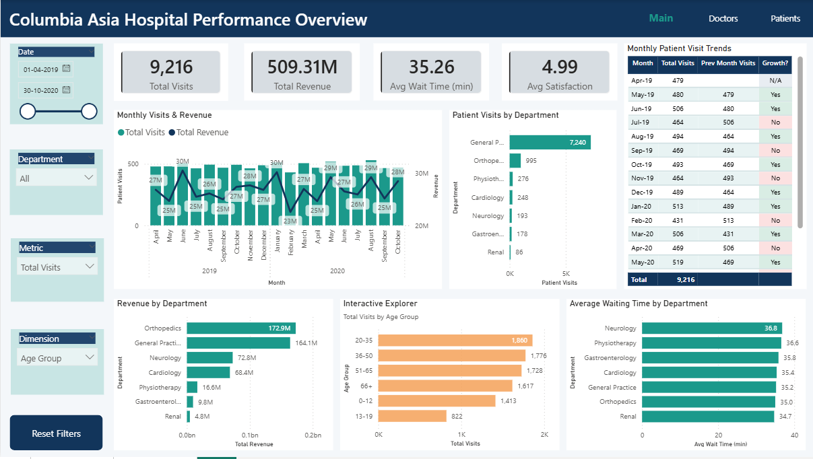
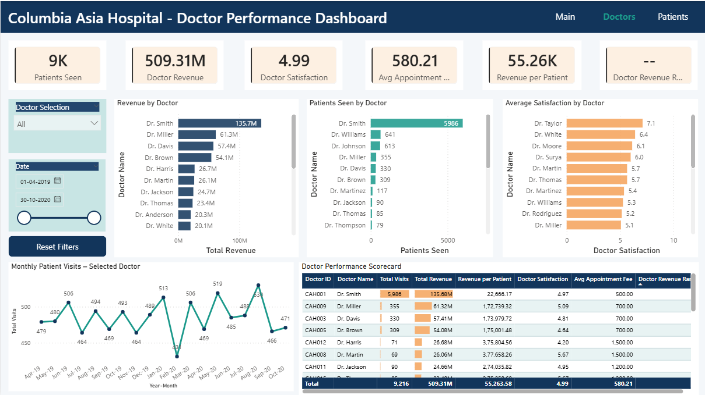
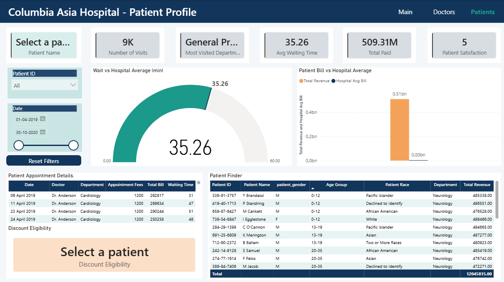

Columbia Asia Hospital
Healthcare Analytics
Transforming hospital data into actionable business insights. An end-to-end analytical project using Power BI, SQL, Power Query and Excel to investigate hospital operations, doctor performance, patient trends and revenue generation.
Understanding Hospital Performance
This project analyses patient, doctor and billing data from April 2019 to October 2020. The goal was to understand operational performance, evaluate revenue generation and develop practical, data-driven recommendations for hospital management.
Business Problem
Hospital management needs to understand which departments generate revenue, where doctor workload is concentrated, how patients experience healthcare services and where operational improvements are required.
Project Objectives
Evaluate department revenue, analyse doctor performance, investigate patient demographics and satisfaction, understand waiting-time patterns and recommend hiring and discount strategies.
Interactive Hospital Dashboard
A three-page Power BI report designed to provide different perspectives on hospital performance through KPIs, slicers, interactive visualisations and dynamic analysis.

01. Main Dashboard
Hospital-wide performance overview featuring revenue, patient visits, average waiting time, department analysis and monthly visit trends.

02. Doctors Dashboard
Doctor-level analysis covering patient distribution, revenue contribution, satisfaction scores and performance comparisons.

03. Patients Dashboard
Patient-level exploration of demographics, waiting time, individual profiles and discount eligibility.
From Raw Data to Business Insights
The analysis followed a structured workflow covering data preparation, transformation, modelling, analytical calculations and reporting.
Load
Imported two Excel datasets into Power BI.
Clean
Handled missing values, duplicates, data types and text inconsistencies.
Model
Designed a fact and dimension table model with date relationships.
Analyse
Created DAX measures and SQL queries for analytical questions.
Visualise
Developed interactive dashboards and business recommendations.
Tools & Technologies
Technologies used throughout the data preparation, analysis and reporting process.
Analytical SQL Techniques
SQL was used to investigate hospital performance through aggregation, conditional logic and advanced analytical queries.
Querying & Aggregation
Common Table Expressions, GROUP BY, aggregate functions, CASE WHEN and conditional aggregation.
Window Functions
LAG and ranking functions to analyse monthly waiting-time changes and compare doctor performance.
Revenue Analysis
Compared doctor and department revenue, patient volumes and billing patterns.
Diversity Analysis
Applied Simpson's Diversity Index to evaluate the distribution of patient groups across doctors.
Key Findings
The analysis revealed several patterns in department performance, patient experience and revenue distribution.
| Metric | Finding |
|---|---|
| Total Hospital Revenue | 509.31M |
| Patient Records | 9,216 |
| Highest Revenue Department | Orthopedics |
| General Practice Visits | 78.6% |
| Average Waiting Time | 35.26 minutes |
| Patients Treated by Dr. Smith | 5,986 |
| Satisfaction Response Rate | 27.3% |
Business Recommendations
Project Limitations
- Only 27.3% of patients had recorded satisfaction scores.
- Cost data was unavailable, so actual profitability could not be calculated.
- Each patient appears once in the dataset, limiting repeat-visit analysis.
Project Resources
Explore the source files, SQL queries and supporting documentation in the GitHub repository.